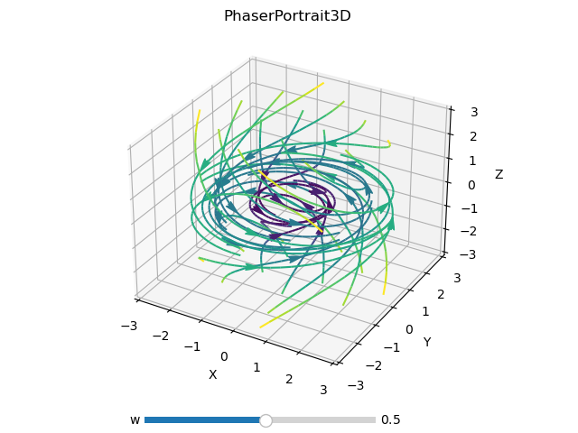

PhasePortrait3D
class phaseportrait.PhasePortrait3D(dF, Range, *, MeshDim=6, dF_args={}, Density=1, Polar=False, **kargs)
Gives the option to represent a 3D phase portrait given a dF function with 3 args.
Parameters
-
dF : callable
A dF type funcion. Computes the derivatives of given coordinates.
-
Range : [x_range, y_range, z_range]
Ranges of the axis in the main plot. See Defining Range.
Key Arguments
-
MeshDim : int, default=6
Lattice side used to make lines not intersect. It has a great impact on performance. We recommend 6~8.
-
dF_args : dict
If necesary, must contain the kargs for the
dFfunction. -
maxLen : int
Max number of points in every trajectory.
-
Density : float, default=1
[Deprecated] Number of elements in the arrows grid plot.
-
Polar : bool, default=False
Whether to use polar (spherical) coordinates or not.
-
Title : str, default='Phase Portrait'
Title of the plot.
-
xlabel : str, default='X'
x label of the plot.
-
ylabel : str, default='Y'
y label of the plot.
-
zlabel : str, default='Z'
z label of the plot.
-
color : str, default='rainbow'
Matplotlib
Cmap. -
xScale : str, default='linear'
X axis scale.
-
yScale : str, default='linear'
Y axis scale.
-
zScale : str, default='linear'
Z axis scale.
Methods
PhasePortrait3D.plot
PhasePortrait3D.plot(*, color=None, grid=None)
Prepares the plots and computes the values.. Color scheme can be changed introducing key argument color. A list with accepted values can be found here.
Returns
- tuple(matplotlib Figure, matplotlib Axis)
PhasePortrait3D.add_slider
PhasePortrait3D.add_slider(param_name, *, valinit=None, valstep=0.1, valinterval=10)
Adds a slider which can change the value of a parameter in execution time.
Parameters
-
param_name : str
The string key of the variable. Must be the same as the key in the
dFfunction.
Key Arguments
-
valinit : float, default=None
Initial value of the parameter.
-
valinterval : Union[float, list], default=0.1
The range of values the slider of the parameter will cover.
-
valstep : float, default=10
Precision in the slider.
Returns
- None
PhasePortrait3D.colorbar
PhasePortrait3D.colorbar(toggle=True)
Adds a colorbar for speed.
Parameters
-
toggle : bool, default=True
If
Truecolorbar is visible.
Returns
- None
Defining Range
-
A range, such
[lowerLimit , upperLimit]. All three axes will take the same limits. -
Three ranges, such that
[[xLowerLimit , xUpperLimit], [yLowerLimit , yUpperLimit], [zLowerLimit , zUpperLimit]]
Examples
import matplotlib.pyplot as plt
import phaseportrait
# Include streamlines clases to change line styles
from phaseportrait.streamlines import *
def dF(x,y,z, *, w=1):
return -y, x, -z
example = phaseportrait.PhasePortrait3D(dF, [-3, 3], MeshDim=6, maxLen=2500, deltat=0.1)
example.add_slider('w')
example.Title = "PhaserPortrait3D"
# Change from color proportional to speed to wind like plot
# Default callback is Streamlines_Velocity_Color_Gradient.
# example.streamplot_callback = Streamlines_Size_Gradient
example.plot(color='viridis', grid=True)
plt.show()
